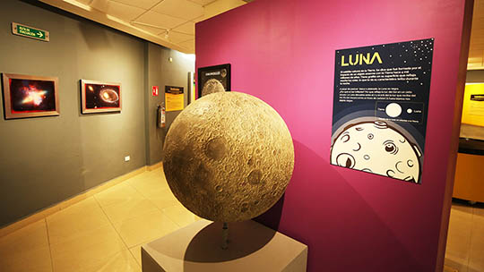

Exhibiciones
MI - YO. Lo que te hace único
Ejercita tu cuerpo y también tu mente
Esta exposición pone a prueba tu conocimiento sobre el cuerpo humano, sin dejar de lado la diversión. A través de actividades que van desde identificar figuras geométricas, hasta jugar baloncesto, conocerás sobre los elementos que componen nuestro organismo y su funcionamiento
Come bien, juega bien
Además de cultivar nuestra mente, es necesario comer sanamente. Por lo que presentamos “Come bien, juega bien”, una sección del Museo que promueve un estilo de vida saludable, mediante la correcta selección de alimentos. Aquí aprenderás a mejorar tus hábitos y obtener más energía con una dieta balanceada y nutritiva.

Física y Astronomía
Conoce los principios de la física
EL objetivo fundamental de “Física recreativa” es estimular la curiosidad y creatividad científica de nuestros visitantes, preservando el carácter lúdico e interactivo de nuestro museo. Aprende sobre física, mecánica clásica, astronomía y óptica, con estos divertidos experimentos.